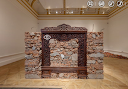
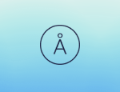
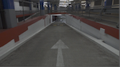

Inspiration
A collection of links to state of the art content and social media strategies,
resources on website transformation and the evolution of work culture.
The key words waltzing in everyone’s head for the past few years? Engagement and relevance.
Here's a selection of clever examples of how organisations relate to their audiences.
Platforms

Ai Wei Wei at the Royal Academy of the Arts • 360° visit
This visit leads us through Ai Wei Wei’s major show at the Royal Academy, presenting some of his most important works from 1993 up to now and curated from his studio in Beijing.It is the first exhibition to be captured in photorealistic stereoscopic 3D, available on desktop, mobile and VR. Introduced by Julian Assange and RA artistic director Tim Marlow, it allows the visitor to come close to the feel of Ai Wei Wei’s works, many of which have raw matter and optical illusion in their core DNA. In addition to the commentary, this experience also features interviews with Ai Weiwei himself. It was produced by The Space agency, and if you haven’t already, take a look at their other projects.
Rhizome • Digital cultures
IRL and URL, Rhizome commissions, exhibits, preserves, and creates critical discussion around art engaged with digital culture.
- A blog entry on Dennis Cooper's GIF novels here
- Relive the final days of Enron through 500,000 emails.
Azone Futures Market • Exhibition

This speculative futures market is an online exhibition hosted by the Guggenheim.
Troy Conrad Therrien, curator of Architecture and Digital Initiatives, presented this at We Are Museums in Bucharest last June.
Open Space - SFMOMA • Editorial platform
Other experimental platform, Open Space a hybrid publishing platform with room for a magazine, recurring features, interdisciplinary projects.
Barbican x Boiler Room

London’s multi-arts venue, the Barbican has been providing audiences with innovative music, drama and more for over three decades.
In more recent years, Boiler Room has been using this impressive space for broadcasts, part of their foray into the realms of jazz, experimental and classical.
This particular film opens in the Barbican’s famous concert hall and slowly descends into the bowels of the complex, covering the underground to the Conservatory with a Four Tet remix soundtrack.
Social media
Style matters.
As Adam Koszary put it recently, “What museums do on social media should reflect what museums aspire to be in person: affecting, personal, relevant and educational.”
It seems obvious, but it is extraordinarily easy to lose track of priorities and start putting internal directives on top of the to do list.
Personality and wit are all essential to a great social media presence.
If each and every one of your posts contains emojis, someone out there is gagging. Fact.
The Barbican’s Instagrammers in residence.
Creating great content in house can sometimes prove challenging for arts organisations whose budget can not always afford a great many content strategists and editors.
Here is a creative, open and cost-effective way to take advantage of existing resources and exterior talent. Spanning architecture, performance and street photography, this guarantees the Barbican a variety of photographic styles, and tells the story of an organisation that is connected to contemporary cultures, including representation and communicating on Internet’s terms.
Here are some portraits: Tobi Shinobi - Dolly Brown
Another expression of the Barbican’s people-centric and local strategy is its What London watches campaign
Victoria & Albert Museum - "You say you want a revolution? Records and rebels 1966-1970" content series.
 “Meet the modern rebels who have been inspired by the counterculture movements of the 60s and continue to fight for change.”
“Meet the modern rebels who have been inspired by the counterculture movements of the 60s and continue to fight for change.”
For their recent exhibition, the V&A imagined a content strategy to address how finished and unfinished revolutions affect the way we live today and think of the future.
By addressing contemporary issues such as empowering communities and making the tech industry more gender-balanced, th V&A signifies its relevance in society. A museum's mission is to connect and foster energies while also fulfilling its educational mission.
— What are your main tools of activism?
— The Internet and empathy.
Website transformation
A collection of useful links
Victoria & Albert Museum - Digital Media blog
The new website - the inside story
Thinking small – how small changes can get big results
ACMI
New website
What is ‘product management’ in a museum?
SFMOMA
On Digital Content StrategyThe way we work
Mailchimp
Hire people, not skills. "People have personalities and perspectives that influence their performance and the way they communicate on teams.
These things are squishy and hard to size up, but ignore them at your peril."
-
Why empathy and objectivity are the keys to product success